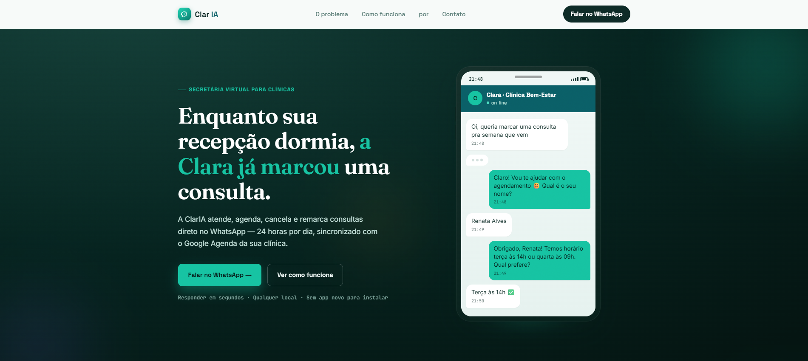

Clar IA
Bot de agendamento com IA via WhatsApp: automação de atendimento, agendamentos e gerenciamento de clientes direto pelo WhatsApp, reduzindo o trabalho manual de marcar e confirmar horários.
JavaScriptSQLWhatsApp APIIA / NLPAutomação